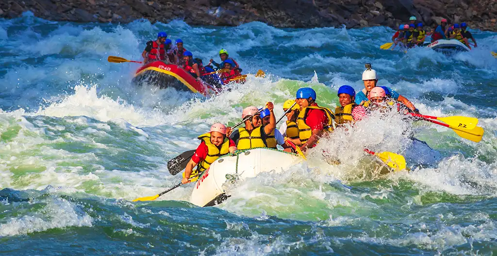
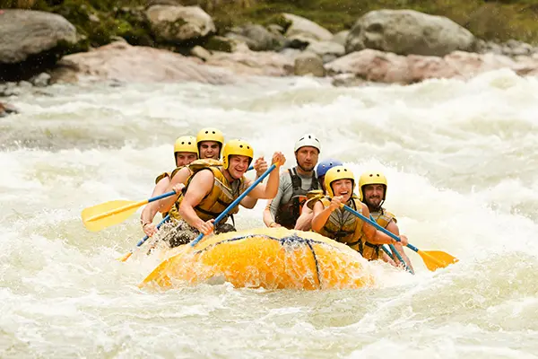
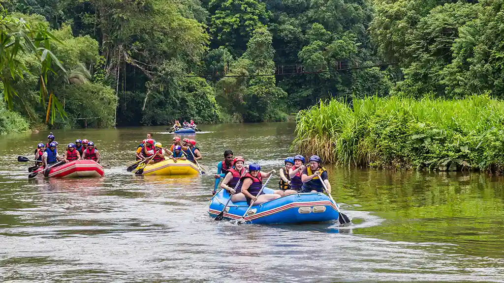

Rio Abaixo Rafting
Nossa missão é proporcionar experiências inesquecíveis em meio à natureza, unindo aventura, segurança e diversão. Cada descida é uma oportunidade de criar memórias incríveis.
A Rio Abaixo nasceu do sonho de três amigos apaixonados por esportes radicais. Começamos com apenas dois botes e muita vontade de explorar os rios da região.

Com o tempo, conquistamos reconhecimento pela segurança, profissionalismo e alegria que levamos a cada aventura.
A aventura está te esperando!




